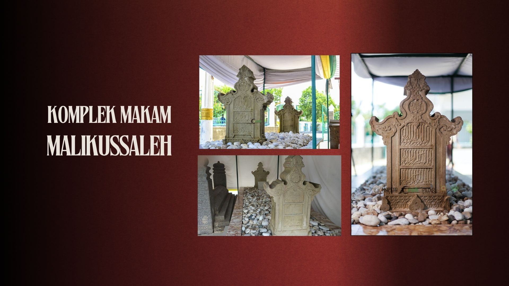
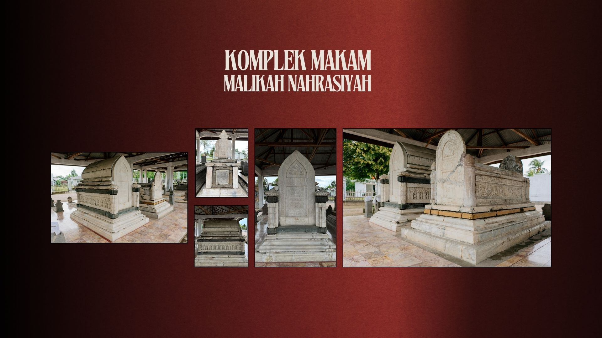
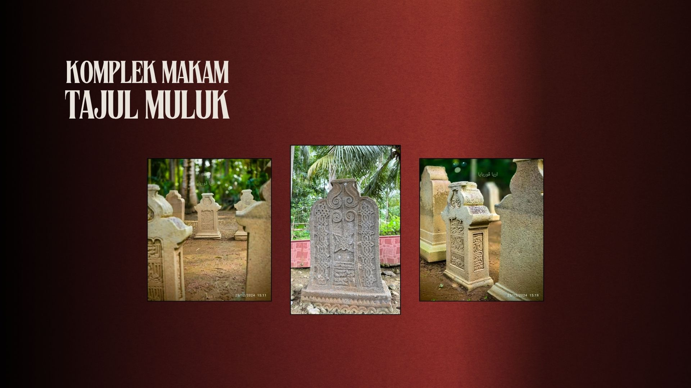
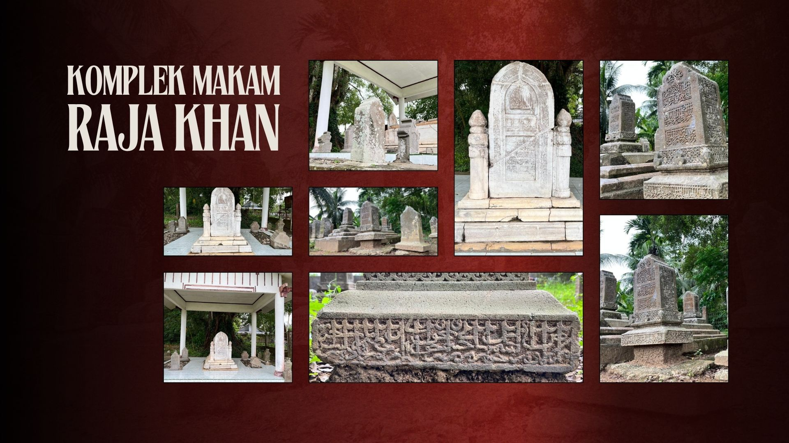
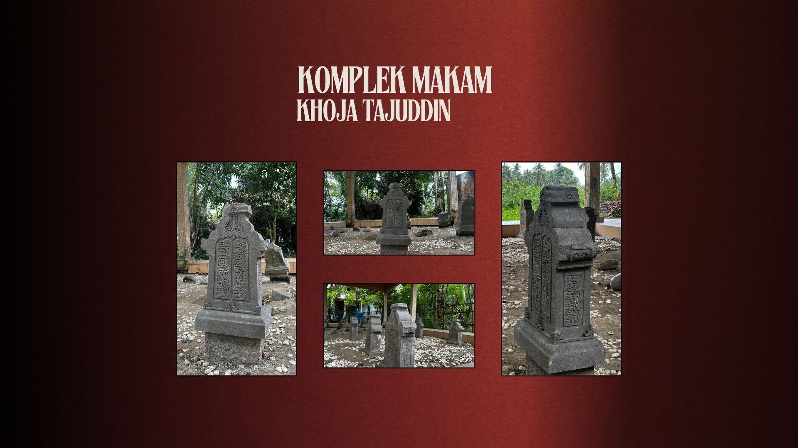
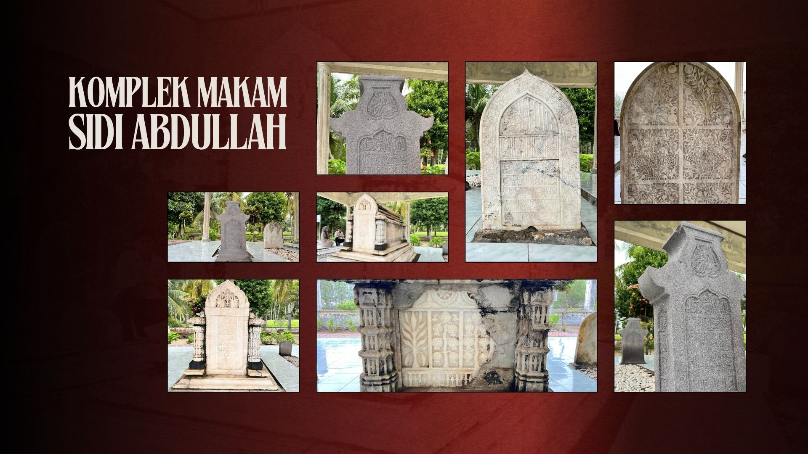
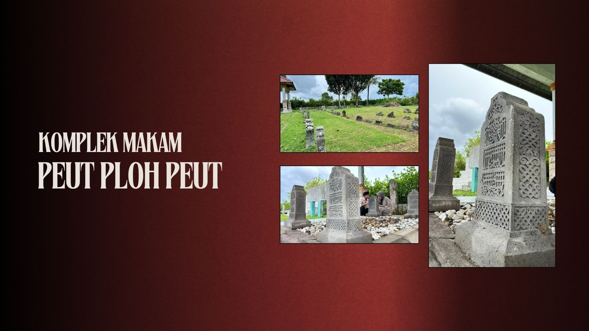
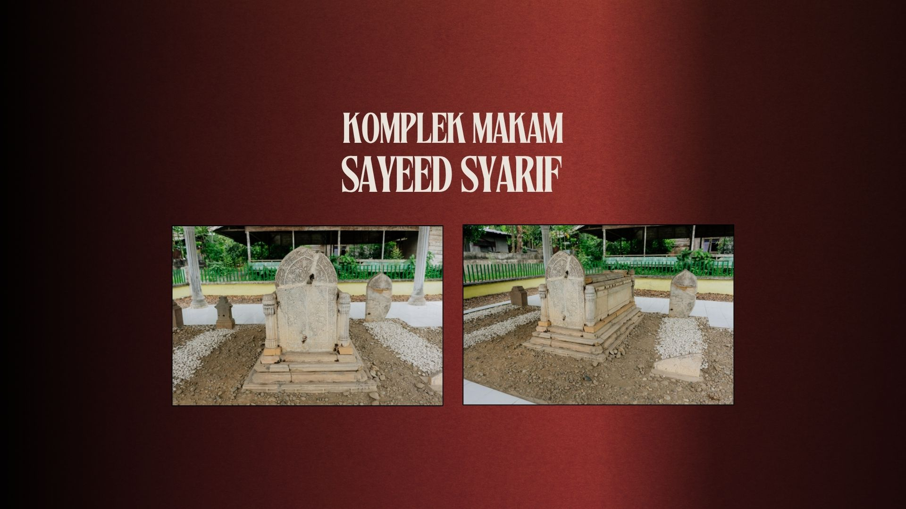
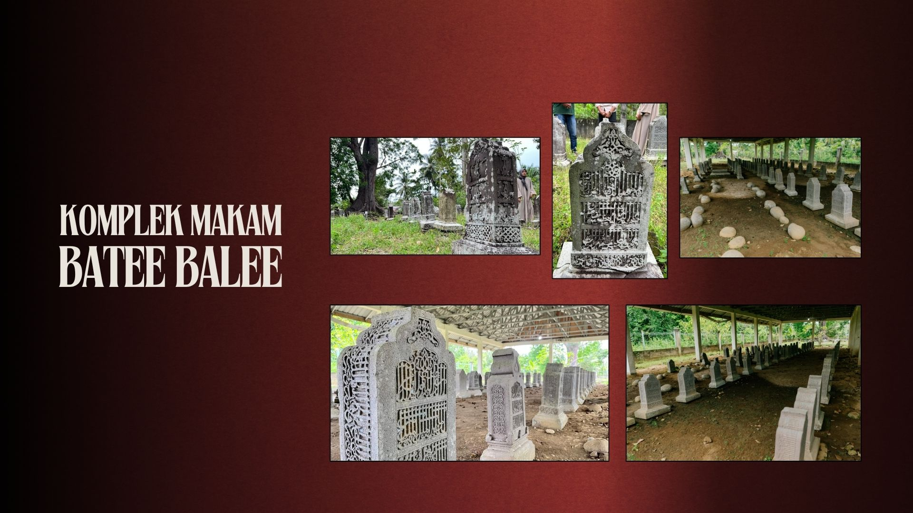
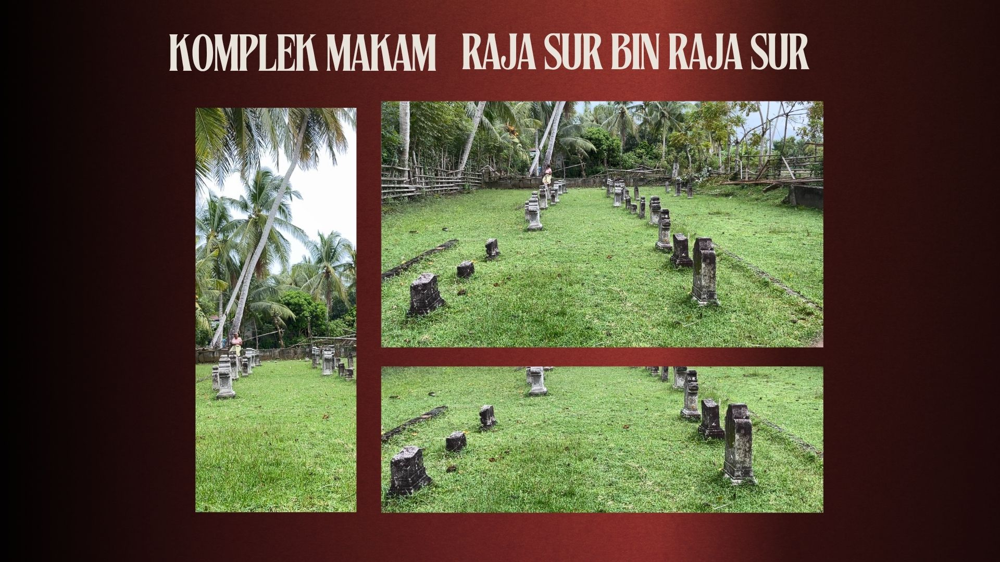

Jelajahi Komplek Makam Samudra Pasai
Samudera Pasai bukan sekadar nama, tapi cahaya peradaban yang harus dijaga.

KOMPLEK MAKAM MALIKUSSALEH

KOMPLEK MAKAM SULTANAH NAHRASIYAH

KOMPLEK MAKAM TAJUL MULUK

KOMPLEK MAKAM RAJA KHAN

KOMPLEK MAKAM KHOJA TAJUDDIN

KOMPLEK MAKAM SIDI ABDULLAH

KOMPLEK MAKAM PEUT PLOH PEUT (44)

KOMPLEK MAKAM SAID SYARIF

KOMPLEK MAKAM BATE BALEE
